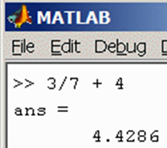
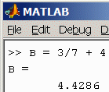

Données et opérateurs
Table des
matières
Les langages procéduraux ou
structurés, comme le C, le Fortran et Matlab, diffèrent seulement dans le type
de données autorisées, dans la nature des opérations disponibles et dans les
mécanismes proposés pour contrôler l'ordonnancement des opérations appliquées
aux données. Trois concepts, données, opérations et mécanismes
de contrôle (ou instructions) forment la base de la programmation et
définissent le cadre des langages informatiques procéduraux.
Cette section présente un
condensé des notions sur les données et les opérateurs.
Pour un apprentissage
efficace, expérimenter avec le logiciel en même temps que vous lisez le guide.
Données
Les données représentent les unités d'information que
gère Matlab. Les données sont constituées de variables et de constantes. Une
donnée possède des valeurs discrètes et elle est représentée par des chiffres
et d'autres symboles (a, b, ç, @, «, %, $, etc.), par exemple : la chaîne
de caractères 'Isaac Newton' et le nombre 1642.
Valeur numérique
Nombres tels 34 ou 5.67
>> 12.34 + 25
Chaîne de caractères
C'est une donnée écrite entre apostrophes
>> 'La Faculté de génie'
Constante, variable et symbole d'attribution “ = ”
Une constante est une
donnée dont la valeur est fixe par opposition à une variable
qui est le nom attribué à une donnée dont on peut modifier la valeur.
Chaque variable
possède 4 propriétés (voir
ci-dessous commande whos) :
· elle a un nom (ex. :
A);
· elle a une dimension matricielle
(ex. : 1x1 pour un scalaire et n×m pour une matrice);
· elle occupe un espace physique en mémoire (ex. : 8 bytes);
· elle appartient à une classe (ex. : double, character, logical, symbolic);
· elle contient une valeur (ex. :
5 (double), ‘allo le monde’, true).
La variable en
informatique correspond approximativement à l'idée mathématique d'une variable.
Cela ressemble à une équation
>> A = 12.3 +4
Ü La variable
en informatique est cependant différente de la variable en mathématiques :
>> A = A + 5
L'instruction précédente vue comme une équation mathématique ne fait pas de
sens. Ce n'est pas une équation mathématique. Le symbole “ = ” signifie
attribue le contenu à droite du signe “ = ” à la variable à gauche du signe “ = ”. Matlab effectue
A + 5 et range le résultat dans la variable A qui vaut
maintenant “21.3”.
Bit et octet (anglais, bit and byte)
Un ordinateur ne manipule que des valeurs numériques
binaires 0 et 1. Toutes les informations (caractères, images, sons)
doivent être transformées en un code numérique binaire.
Un Bit vaut 0 ou 1 (unité
élémentaire).
Un Octet (anglais, byte) est un
groupe de huit bits rangés en séquence :
Un simple octet représente les nombres binaires de 0000 00002 à
1111 11112 et peut contenir 256 informations. Exemple de
conversion
17310 = 101011012 = 1*27 +0*26 +1*25 +0*24 +1*23 +1*22 +0*21 +1*20
kilo-octet (ko, anglais
kb) = 1024 octets = 210
octets
Méga-octet (Mo, anglais Mb) = 1,024 ko = 220
octets
Giga-octet (Go, anglais
Gb) = 1,024 Mo = 230 octets
Téra-octet
(To, anglais Tb) =
1,024 Go = 240 octets
Opérateur
Instruction servant à préciser l'opération à effectuer
sur des opérandes. Par exemple, l'opérateur arithmétique “ + ”
effectue une addition telle 5.4 + 3.
Classe de données
Ensemble de données (variables, constantes), de
fonctions et d'opérateurs permis sur ces variables. Ce regroupement permet à
l'ordinateur de manipuler adéquatement les données.
·
donnée numérique tels le nombre réel
25.8 et l'entier 19
·
donnée caractère telle la chaîne
'allô'
·
donnée symbolique telle l'équation sym('x^2+3').
·
donnée logique ou booléenne tels le Vrai ou le Faux [En Matlab, on utilise true / false ou bien 1 / 0]
Taper l'exemple
suivant : 
Matlab agit comme une calculatrice, effectue les opérations (division et
addition) sur les constantes (3, 7, 4) et affecte la valeur à la
variable par défaut ans (answer, réponse).
On peut également conserver
le résultat dans la variable de son choix : 
Une variable est liée à un emplacement dans la mémoire de l'ordinateur, ce
qui permet à l'utilisateur de conserver une valeur ou un ensemble de valeurs,
de les rappeler et de les modifier. Une variable a toujours un nom littéral
pour l'identifier et accéder à l'emplacement mémoire de l'ordinateur qui
contient la valeur.
Toujours choisir un nom
significatif. Dans le contexte d'un magasin, les variables Taxe et Vente sont
des termes plus significatifs que le choix de A et B pour le même
référentiel.
Une variable se manipule en
écrivant son nom.
>> A = 3A = 3>> B = A + 7B = 10>> B = B * AB = 30>> AA =3
On peut donc attribuer des valeurs à
des variables et s'en servir pour effectuer des calculs :
>> Achat=23.45
>>
Taxe=0.19
>> Achat*(1+Taxe)
Ü Matlab ne reconnaît pas les caractères accentués ou spéciaux comme nom
de variable.
Donnée = 10
>> Donnée = 10??? Donnée = 10|
Error: The input character
is not valid in MATLAB statements or expressions.
Ü Matlab fait la différence entre minuscule et MAJUSCULE comme nom de
variable.
>> A = 10
>> a = 5
A et a sont vus comme deux variables
différentes. Ce n’est pas toujours le
cas dans d’autres langages de programmation.
Matlab comporte les opérateurs arithmétiques habituels :
addition +
soustraction -
multiplication *
division /
exponentiation ^ (élever à une puissance).
Priorité des opérateurs
Cela correspond à la pratique
habituelle en génie et en science. Vérifier
>> 3 + 7 * 2
ans = 17
>>
3 + ( 7 * 2)
ans = 17
>>
( 3 + 7 ) * 2
ans = 20
>>
3 + 7 * 2^3
ans = 59
>>
3 + (7 * 2)^3
ans = 2747
>>
(3 + 7) * 2^3
ans = 80
>> 3 + 7 * ( 2^3)
ans = 59
Remarquer l'effet du point-virgule {;}
>>
A = 3
A = 3
>>
B = 7;
“ pas de réponse”
>> C = 2;
“ pas de réponse”
>> D = A + B + C
D = 12
>>
B
B = 7
Pour afficher la valeur contenue
dans la variable B, on écrit simplement le nom de la variable. Le
point-virgule après une instruction empêche l'affichage du résultat.
Matlab possède les fonctions usuelles
des calculatrices :
Valeur de π
>> clear % efface toutes les variables en mémoire>> pians =
3.1416
Fonctions trigonométriques
par exemple, le sinus de 60°
>> sin(pi/3) % en radiansans =
0.86603>> sind(60) % en degrésans =
0.86603
Noter que les fonctions
trigonométriques sont révisées dans le chapitre portant sur les vecteurs en
statique.
Fonctions inverses
par exemple, le sinus inverse
>> EnRadians = asin(0.5)EnRadians =
0.5236>> EnDegres = EnRadians*180/piEnDegres =
30>> asind(0.5)ans =
30
Exposant d'un nombre
>> 15^2ans =
225>> 2^-4ans =
0.0625
Racine carrée
>> sqrt(26)ans =
5.099
Matlab manipule d'autres classes de
données.
>> NomDuCours = 'Ing250'; % donnée caractère>> A = 5; B = 4; Q = A > B; % donnée booléenne>> syms x; y=sin(x); z=diff(y) % donnée symbolique réponse : z = cos(x)>> whos Nom Dimension Octets Classe A 1x1 8 double B 1x1 8 double NomDuCours 1x6 12 char Q 1x1 1 logical ans 1x1 126 sym x 1x1 126 sym y 1x1 136 sym z 1x1 136 sym
Matlab comporte une coquille Maple
pour manipuler des données de la classe symbolique.
Dans les exemples précédents, on a
utilisé des données numériques ne contenant qu'une seule valeur, constante ou
variable. Une donnée numérique exprimée par une seule valeur est un scalaire.
Scalaire
C'est une grandeur définie par sa mesure.
On peut le voir aussi comme un tableau ne contenant qu’une valeur.
Dans Matlab, les valeurs dans un tableau sont définies entre les
crochets [ ]
Exemple :
>> 3
ans = 3
>>
A = 3
ans = 3
>>
A = [3]
ans = 3
Vecteur et Matrice
C'est un tableau contenant une ou plusieurs dimensions.
Exemple : vecteur ligne (ou tableau 1D)
>> V = [1 2]V =1 2
Exemple : vecteur colonne (ou tableau 1D)
>> V = [1; 2]V = 1 2
Exemple : matrice 3x3 (ou tableau 2D)
>> M = [ 11 12 13; 21 22 23]M = 11 12 13 21 22 23
Par définition, un tableau est
composé de n rangées (row) et de m colonnes (column).
Dans la liste de valeurs définies entre les crochets [ ],
le ; permet de changer de rangée.